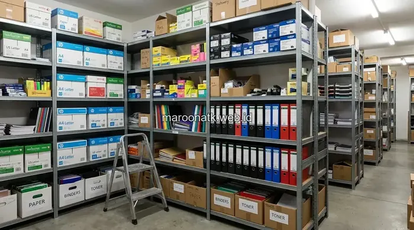

Pengadaan ATK kantor yang tidak terencana sering menjadi sumber pemborosan anggaran tahunan perusahaan. Kesalahan seperti memilih supplier hanya berdasarkan harga termurah, tidak memiliki sistem stok, hingga minim dokumen legal berpotensi merugikan proses purchasing maupun keuangan perusahaan secara berulang.
Apa Itu Pengadaan ATK Kantor yang Efisien?
Pengadaan ATK kantor yang efisien adalah proses pembelian alat tulis dan perlengkapan kantor yang terencana, mempertimbangkan kualitas, harga, dan keandalan supplier, bukan sekadar memenuhi kebutuhan sesaat.
Proses ini idealnya melibatkan sistem pemantauan stok, kontrak kerja sama tertulis, dan evaluasi rutin terhadap kinerja vendor agar anggaran operasional kantor tetap terkendali sepanjang tahun. Dengan standardisasi yang matang, tim General Affairs dapat mengantisipasi kebutuhan divisi tanpa harus melakukan pengadaan terburu-buru yang menelan ongkos kirim tinggi.

Cara Menilai Legalitas Supplier Alat Kantor Jakarta Sebelum Kontrak
Pelajari cara menilai legalitas NIB, NPWP, dan kepatuhan pajak supplier ATK sebelum menandatangani kontrak kerja sama B2B.
Mengapa Kesalahan Pengadaan ATK Bisa Menyebabkan Pemborosan Anggaran?
Kesalahan dalam pengadaan ATK menyebabkan pemborosan karena biaya yang muncul tidak hanya dari harga beli barang di nota, tetapi juga dari penggantian barang rusak, keterlambatan alur kerja akibat stok kosong mendadak, serta waktu administrasi yang terbuang untuk mengurus pembelian ad-hoc.
Selain itu, ketiadaan dokumen legal seperti faktur pajak e-Faktur PPN 11 persen dapat menyulitkan proses audit internal maupun eksternal KAP, yang pada akhirnya menambah beban kerja tim keuangan dan purchasing. Ketika Total Cost of Ownership (TCO) dihitung secara komprehensif, harga murah palsu di awal justru melipatgandakan pengeluaran operasional perusahaan.
Apa Saja 10 Kesalahan Fatal dalam Pengadaan ATK Kantor?
Berikut sepuluh kesalahan yang paling sering ditemui dalam proses pengadaan ATK kantor, mulai dari tahap pemilihan supplier hingga pengelolaan dokumen administrasi:
- Hanya Fokus pada Harga Termurah — Mengabaikan kualitas bahan dan daya tahan barang sehingga alat tulis cepat rusak, kertas mudah macet di mesin fotokopi, dan harus diganti lebih sering dengan biaya penggantian ganda.
- Tidak Meminta Sampel Produk — Langsung memesan dalam jumlah besar tanpa menguji keaslian tinta cartridge, gramatur kertas HVS, atau ketahanan ordner penyimpanan arsip terlebih dahulu.
- Mengabaikan Reputasi dan Legalitas Supplier — Tidak mengecek kelengkapan Nomor Induk Berusaha (NIB), NPWP badan usaha, status PKP, serta rekam jejak kepuasan klien instansi sebelumnya.
- Tidak Memiliki Sistem Pemantauan Stok — Pembelian baru dilakukan secara panik saat barang benar-benar habis di lemari penyimpanan, sehingga harga negosiasi dan waktu pengiriman menjadi sangat tidak optimal.
- Order dalam Jumlah Kecil Secara Berulang — Biaya pengiriman dan waktu proses Purchase Order berkali-kali menjadi jauh lebih besar dibanding beralih ke skema pembelian terjadwal bulanan.
- Tidak Membandingkan Total Cost of Ownership — Hanya melihat harga nominal awal barang tanpa memperhitungkan biaya penggantian, waktu kerja staf yang terbuang, dan biaya perbaikan mesin kantor akibat ATK berkualitas buruk.
- Tidak Ada Kontrak atau Surat Penawaran Harga Tertulis — Transaksi informal tanpa SPH resmi sangat rawan memicu sengketa fluktuasi harga dan perubahan spesifikasi sepihak di kemudian hari.
- Mengabaikan Faktur Pajak dan Dokumen Keuangan — Ketiadaan e-Faktur Pajak, BAST, dan kwitansi resmi menyulitkan rekonsiliasi pajak dan berisiko menjadi temuan audit internal maupun BPK.
- Tidak Melibatkan Tim Purchasing Sejak Awal — Spesifikasi barang dipesan langsung oleh divisi pengguna tanpa koordinasi tim purchasing, memicu ketidakseragaman standar barang kantor.
- Tidak Mengevaluasi SLA Pengiriman Supplier — Barang krusial sering terlambat tiba di saat rapat penting atau operasional puncak karena ketiadaan Service Level Agreement yang mengikat.

Checklist evaluasi supplier ATK kantor terpercaya untuk mencegah pemborosan anggaran dan menjamin akuntabilitas pengadaan B2B.
Bagaimana Cara Mencegah Kesalahan Pengadaan ATK Kantor?
Langkah pertama yang harus diambil manajemen perusahaan adalah menyusun Standar Operasional Prosedur (SOP) pengadaan ATK yang jelas, termasuk penetapan standar mutu minimum barang dan jadwal evaluasi kinerja supplier secara berkala.
Menggunakan sistem paket pengadaan bulanan juga sangat membantu menstabilkan arus kas (cash flow) anggaran dan mengeliminasi frekuensi pembelian mendadak. Dengan sistem paket berkala, bagian pembukuan akuntansi menerima satu tagihan konsolidasi terprediksi setiap bulannya.
Terakhir, pastikan setiap kerja sama pengadaan didukung kelengkapan dokumen legal lengkap, mulai dari Surat Penawaran Harga (SPH), Purchase Order, Surat Jalan bermaterai, Berita Acara Serah Terima (BAST), hingga e-Faktur Pajak resmi agar proses audit keuangan berjalan mulus tanpa kendala.

SOP Pengadaan ATK Kantor Swasta: Alur Pembelian dan Pembayaran Tempo
Pelajari standarisasi alur purchase requisition, penyeleksian vendor resmi, dan mekanisme pembayaran tempo Net 30.
Bagaimana Melanjutkan ke Tahap Pengadaan ATK yang Lebih Efisien?
Setelah memahami kesalahan-kesalahan yang wajib dihindari, langkah strategis berikutnya adalah mengevaluasi kriteria supplier ATK secara menyeluruh sebelum menandatangani kontrak kemitraan jangka panjang.
MAROON ATK melayani kebutuhan pengadaan ATK kantor untuk wilayah Jakarta, Surabaya, Malang, Denpasar, Makassar, hingga ke seluruh Indonesia dengan sistem paket bulanan terstruktur, jaminan dokumen legal lengkap, opsi pembayaran tempo korporat, serta pengiriman terjadwal yang amanah.
Untuk memahami kriteria pemilihan supplier yang tepat, pelajari panduan mendalam kami di panduan memilih supplier ATK kantor terpercaya, atau tinjau langsung katalog perlengkapan administrasi kami di halaman katalog produk ATK MAROON ATK.
Pertanyaan yang Sering Diajukan
Kesalahan paling umum adalah hanya berpatokan pada harga termurah tanpa mempertimbangkan kualitas barang dan rekam jejak supplier, sehingga barang cepat rusak atau pengiriman sering terlambat.
Bandingkan Total Cost of Ownership, yaitu harga beli ditambah biaya penggantian dan waktu kerja yang hilang akibat barang cepat rusak, bukan hanya harga satuan di awal.
Pembelian eceran justru cenderung lebih boros karena harga satuan lebih tinggi dan proses administrasi pembukuan lebih rumit dibanding sistem paket pengadaan bulanan.
Purchasing team sebaiknya meminta faktur pajak, legalitas perusahaan, dan Surat Penawaran Harga resmi sebelum menyepakati kerja sama jangka panjang.
Periksa Service Level Agreement atau SLA pengiriman yang tertulis jelas dalam kontrak kerja sama, serta cek testimoni klien lain sebagai bahan pertimbangan.

Ridhan Fahri
Praktisi procurement dan pengadaan operasional korporat yang berfokus pada standarisasi rantai pasok ATK, efisiensi anggaran perlengkapan kantor, integrasi teknologi visual, dan manajemen aset fasilitas B2B di Indonesia.